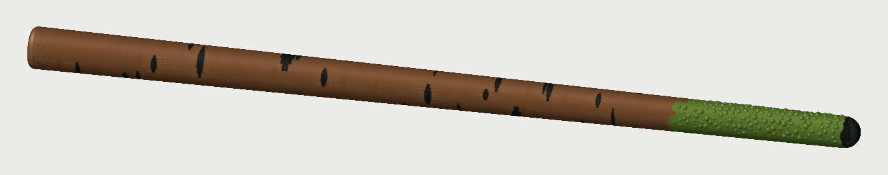

050100150200 mm
Birk valgt
Den valgte gren, nu med brun bark. De korte sorte streger og de to mørke knaster er de samme som før. Mosset sidder kun i toppen og slutter med en takket kant. Helt ude i spidsen er der en lille sort ende.
- Udtryk
- Fundet i skoven
- Mest
- Brun, med lidt sort
- Stregerne er kun 0,6 mm dybe i overfladen